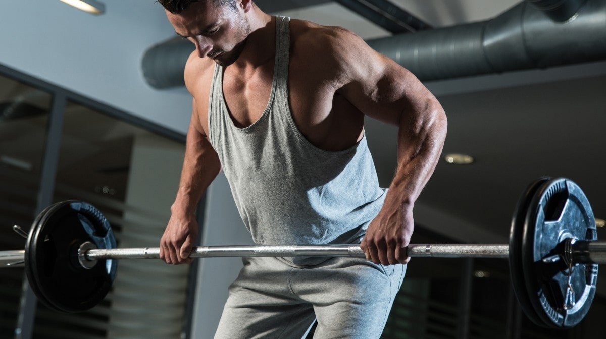
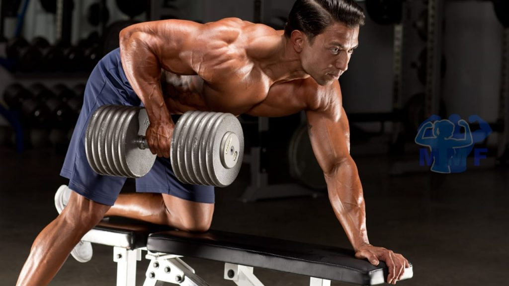
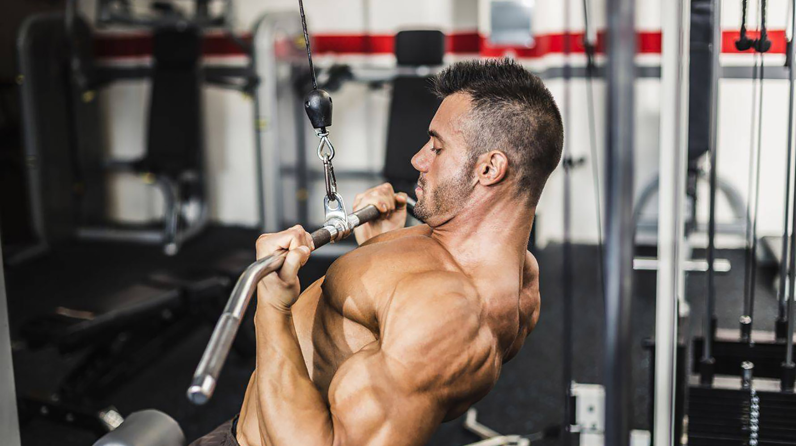
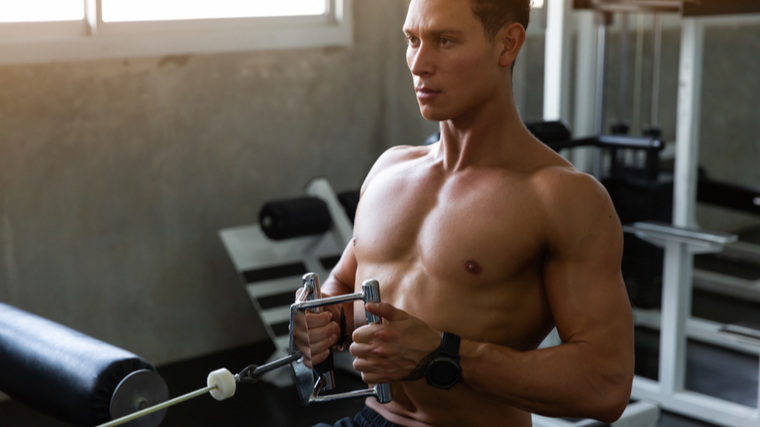
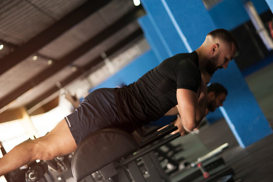
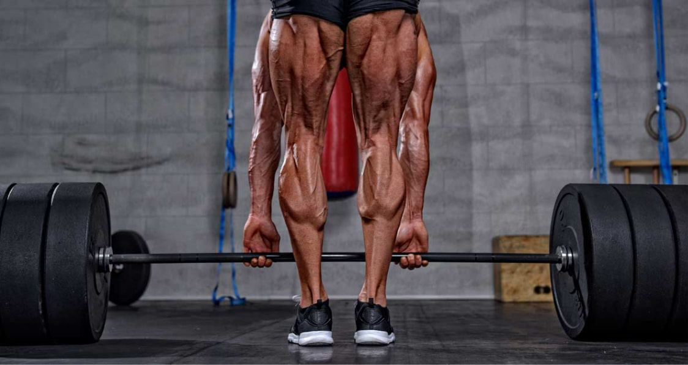

The wide-grip pullup is an advanced bodyweight exercise that improves strength in the back, shoulders, and biceps.
The wide-grip position emphasizes the back by reducing resistance on the biceps and forearms.
How To Do Pullup (wide grip):
Grasp the bar with an overhand grip. Fully extend your arms and relax your shoulders to stretch your lats in the bottom position.
As you pull up, visualize keeping your elbows out to your sides and pulling them down to raise yourself while contracting your lats.
Pull yourself up as high as possible to fully stimulate your lats.
If you can’t make it all the way up, consider enlisting the help of a spotter or use an assisted pullup machine.
2. Bentover Barbell Row (wide grip)

The bent over row is typically used to build and strengthen the muscles of the upper back (latissimus dorsi, rhomboids, and trapezius).
However, it requires assistance from muscles of the low back, core, and arms to perform a bent over row correctly.
How To Do Bentover Barbell Row:
Don’t stand on a flat bench or platform to increase your range of motion; you’re more likely to round your low back at the bottom.
If you do need greater range of motion, use smaller plates to allow you to clear the floor rather than trying to balance yourself on a flat bench.
Using a wider-than-shoulder-width grip allows you to keep your elbows out to your sides and pull them back as high as possible for a full contraction.
Keep your knees bent and remain in the bent-over position throughout. It’s easy to rise from this position when using heavy weights, but that recruits other muscle groups to assist in the move.
3. Dumbell Row

This is one of the first variations novice lifters learn. You simply hinge forward, place one arm on a bench or rack for balance, and grasp a dumbbell in the other arm.
Keep your torso steady as you bend your elbow and use your back muscles to pull the dumbbell up toward your ribcage.
Dumbbell rows involve a host of back muscles, but if you want to focus on your lats here, aim to get a good stretch at the bottom of the motion.
How To Do Dumbell Row:
Start standing, holding a single dumbbell in your right hand.
Now hinge forward until your torso is nearly parallel with the ground.
Keep your core tight and your feet shoulder-width apart as you do this.
Place your left hand on a box or bench for balance. This is the start.
Pull the dumbbell back to just above your belly button, then slowly return it back to the start.
Lower Lats Exercises
1. Reverse-Grip Pulldown

The reverse grip lat pull down is a variation of the lat pull down and an exercise used to build the muscles of the back.
While the exercise will primarily target the lats, you will also notice a fair amount of bicep and middle back activati
How To Do Reverse-Grip Pulldown:
Take an underhand, shoulder-width grip. This allows you to pull your elbows back as far as possible, maximally stimulating the back muscles.
Keep your torso upright and a slight arch in your back as you fully extend your arms at the top.
Keep your chest out and flexed throughout the move; this helps concentrate more stress on the back muscles.
Pull your elbows down and back as far as you can until the bar approaches your upper pecs. Squeeze your shoulder blades together at the point of peak contraction.
2. Underhanded Bent Over Row
Most pulling exercises train the lats to a certain degre. To better target the lower lats, you need a little tweak in the technique here or there to focus on them.
For example, the switch in hand position to underhanded for the bent over row trains more scapular depression, which helps train the lower lats.
Plus, it focuses more on the biceps too. Like you needed an excuse.
How To Do Underhanded Bent Over Row:
Hinge at your hips and grab a loaded barbell with an underhanded grip that’s slightly wider than shoulder-width.
Squeeze your shoulder blades together and row the barbell until it’s touching your stomach.
You want your elbows to be angled at about 45 degrees throughout the movement.
Hold the top position of the row for a beat and then slowly lower the weight back down
Middle Back
2. Close-Grip Seated Cable Row

The seated cable row is an isolated exercise that targets the middle and upper back. This movement also improves shoulder muscle balance and corrects posture.
How To Do Close-Grip Seated Cable Row:
Keep a slight bend in your knees to reduce pressure on them and maintain better balance.
Though you might think leaning forward allows a greater range of motion, keeping your torso upright hits the middle back more while also minimizing stress on the lumbar region.
Keep a slight arch in your low back at all times.
Pull your shoulders and elbows back as far as possible so the bar touches your midsection.
Lower Back
1. Back Extension

The static back extension builds strength in the lower back, hamstrings, and glutes. Performing the exercise with a static contraction increases muscular endurance.
How To Do Back Extension:
Once you’re situated on the bench, cross your arms over your chest or behind your head (this is more difficult); alternatively, you can hold a weight plate close to your chest to increase the intensity.
Slowly bend at the waist as far as you can, rounding your back as you go.
Contract your low-back muscles to raise your torso until you reach the starting position.
Don’t use a ballistic motion, and avoid going too high; contrary to what some people call this move, hyperextending your back isn’t a good idea.
2. Stiff-Legged Deadlift

The barbell straight-leg deadlift builds strength in the core, hamstrings, glutes, and lower back. Correctly performing this exercise depends on mastering in the hip hinge, which requires you to push your hips back and feel a stretch in your hamstrings to start the movement.
Proper form includes not rounding your upper or lower back and keeping the barbell as close as possible to your body.
How To Do Stiff-Legged Deadlift:
The bar comes closer to the floor in the stiff-legged version than the romanian deadlift, a range of motion that works the lower back more.
As you bend at the waist, push your glutes back and allow the bar to hang freely straight down from your shoulders. Your legs should be straight.
Keep your lower-back muscles contracted throughout as you resist the weight’s descent.
Push your hips forward as you rise. Stand straight up without leaning backward at the top. The bar should rest across the top of your thighs.
Concentrate on pulling with your back and hip muscles, not your arms, when raising your torso.